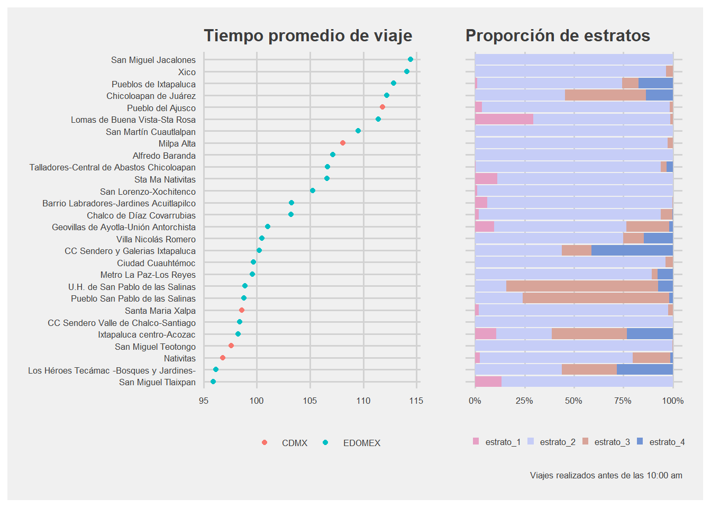
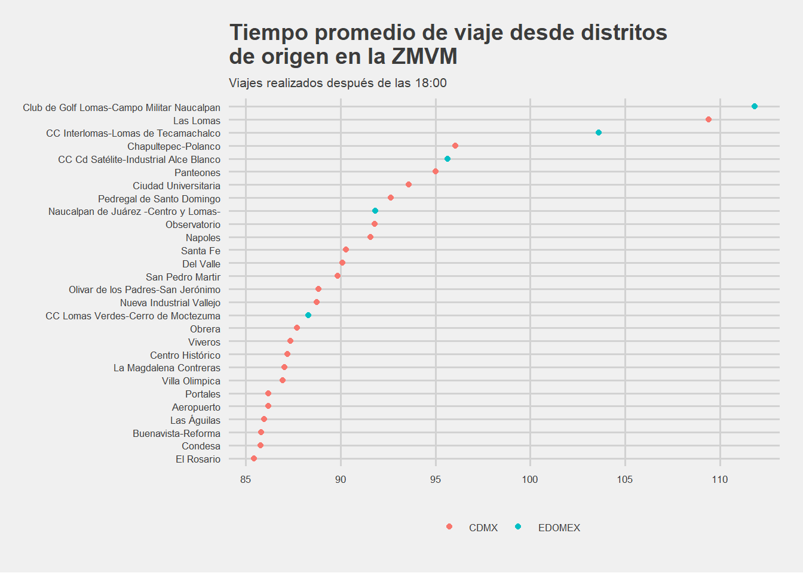
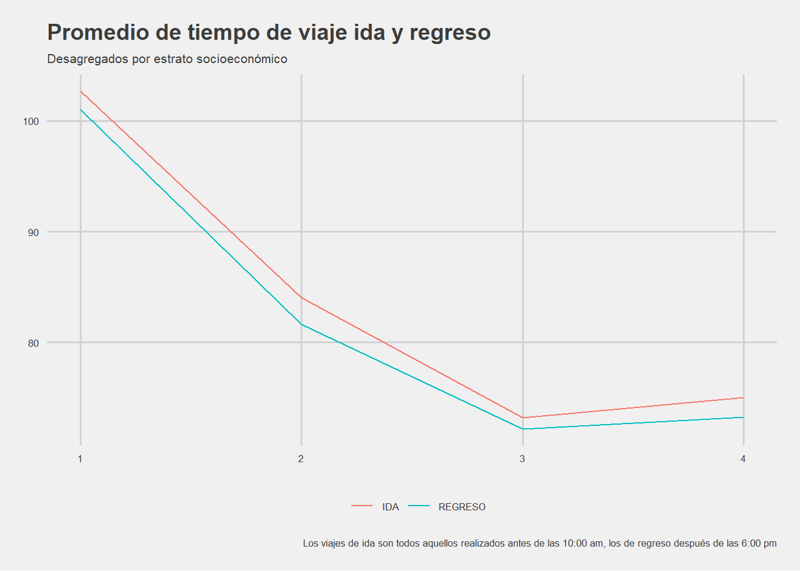
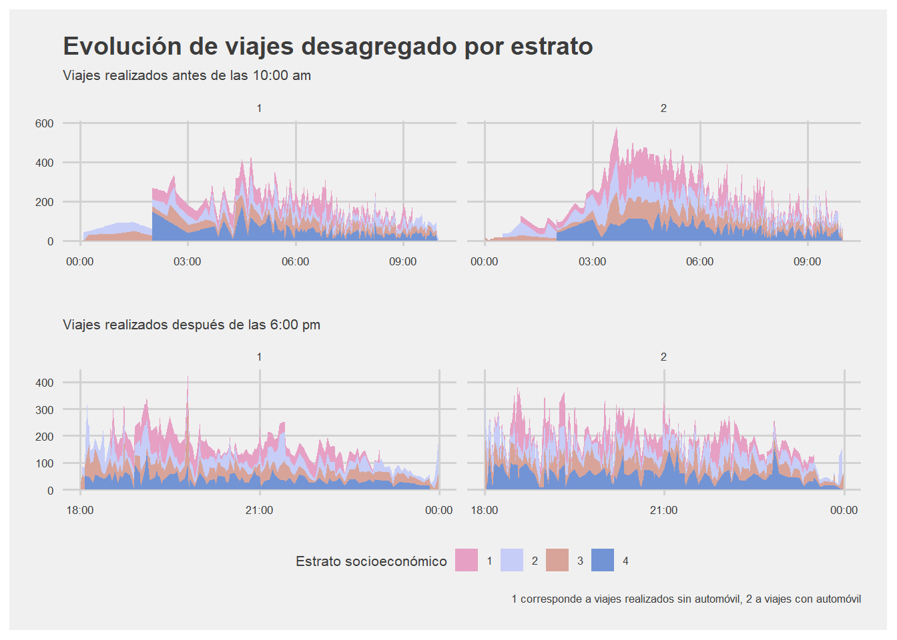
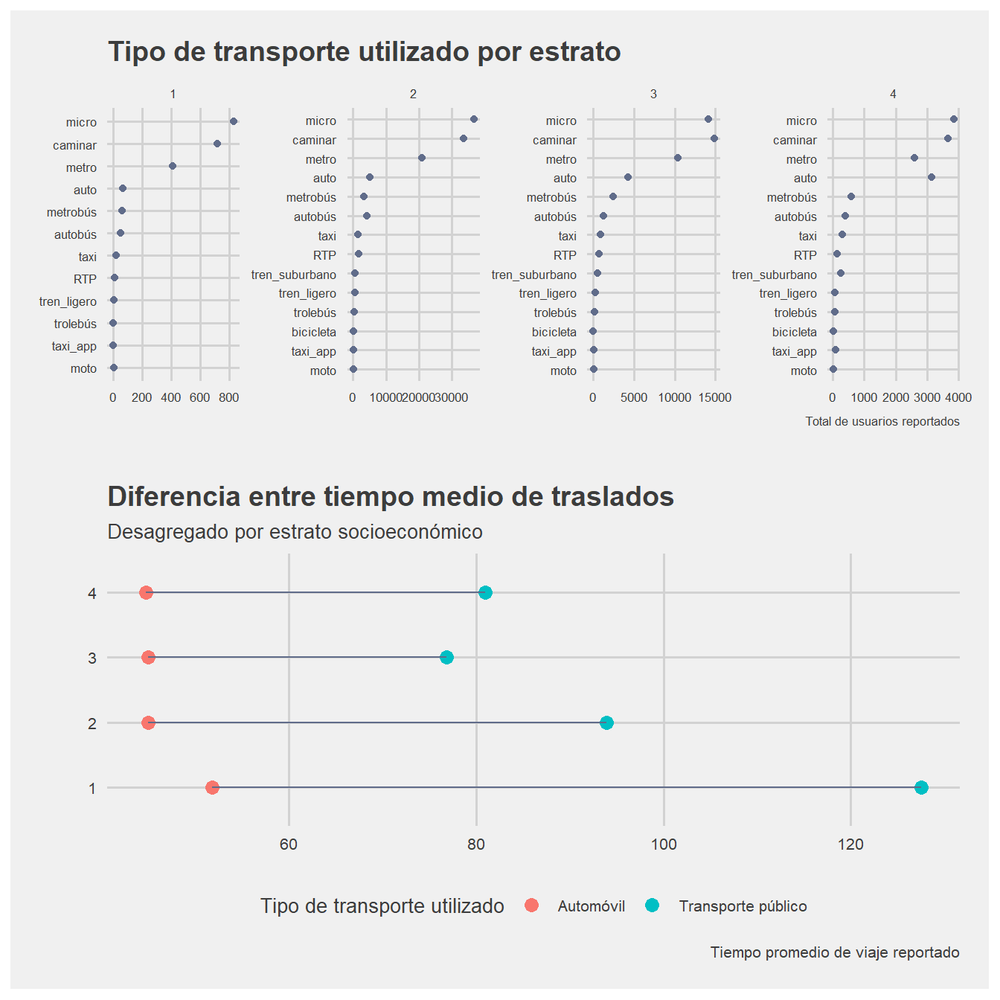

EDO INEGI
Análisis de la Encuesta Origen Destino (EOD) de la Zona Metropolitana del Valle de México, 2017
Este análisis de datos está basada en la encuesta a hogares realizada por el Instituto Nacional de Estadística y Geografía (INEGI).
El estudio está dividido de la siguiente forma
tiempo de traslado promedio por distritos en la ZMVM;
descomposición de los tiempos promedio por estrato socioeconómico;
análisis del uso de tipo de transporte por estrato socioeconómico.
Tiempo de traslado promedio por distrito
Esta sección tiene como propósito identificar en qué distritos de la ZMVM se concentran las medias de traslado más altas. Es decir, en qué distritos vive la gente que tarda más en ir y venir a su escuela o trabajo. La primera gráfica identifica los 28 distritos que concentral el mayor tiempo medio de traslado en viajes realizados antes de las 10:00 am; esto para identificar los viajes realizados durante el primer rango de horas de mayor afluencia. Dentro de estos distritos destaca que únicamente cinco pertenecen a la Ciudad de México, mientras que los 23 restantes están en el Estado de México.
La siguiente gráfica analiza la composición de estos distritos. Como es posible observar, no existe una tendencia clara. Por ejemplo, en los 13 primeros distritos, con excepción de Pueblo de Ixtapaluca y Chicoloapan de Juárez, predomina el estrato socioeconómico 2. Mientras que en la mitad de la tabla vemos distritos con mayor proporción de estrato socioeconómico tres y cuatro. Algunos ejemplos son Galerías Ixtapaluca o Villa Nicolas Romero. Por tanto, es posible decir que entre los distritos que presentan mayor tiempo promedio de traslado a trabajos y escuelas predominan aquellos en los que sus habitantes pertenecen al estrato socioeconómico dos. Aunque existen excepciones.
La misma gráfica analiza la composición de estos distritos. Como es posible observar, no existe una tendencia clara. Por ejemplo, en los 13 primeros distritos, con excepción de Pueblo de Ixtapaluca y Chicoloapan de Juárez, predomina el estrato socioeconómico 2. Mientras que en la mitad de la tabla vemos distritos con mayor proporción de estrato socioeconómico tres y cuatro. Algunos ejemplos son Galerías Ixtapaluca o Villa Nicolas Romero. Por tanto, es posible decir que entre los distritos que presentan mayor tiempo promedio de traslado a trabajos y escuelas predominan aquellos en los que sus habitantes pertenecen al estrato socioeconómico dos.
Los habitantes de San Miguel Jacalones viajan en promedio dos horas hasta su trabajo o escuela.
Por último, los distritos con mayor tiempo de traslado en viajes realizados después de las 6:00, esto para coincidir con la segunda mayor franja horaria de afluencia en traslados. Podemos observar cambios respecto a la primera gráfica. Por ejemplo, podemos encontrar distritos como Campo Militar Naucalpan, Las Lomas o Chapultepec. Esto nos indica que los distritos con mayor tiempo de traslado después de las 6:00 pm son distritos en los que las personas parten de sus trabajos o escuelas para regresar a su hogar. En este punto, contrario a lo anterior, únicamente cinco distritos corresponden al Estado de México, mientras que los restantes a la Ciudad de México.

Descomposición de los tiempos de traslado por estrato socioeconómico

Ahora bien, si analizamos el fenómeno en conjunto, podemos ver que el estrato socioeconómico uno presenta el tiempo de traslado promedio más alto de toda la ZMVM. Si contrastamos esto con lo encontrado en la sección anterior podemos inferir que no es un fenómeno focalizado. Es decir, no hay distritos que concentren a la mayor parte de la población que pertenece al estrato socioeconómico 1. Sin embargo, a mejor estrato socioeconómico, sí es posible observar menores tiempos de traslado. Por ejemplo, entre el menor y mayor estrato hay 30 minutos de tiempo promedio de diferencia, esto sin tomar en cuenta el tipo de transporte utilizado. Además, este fenómeno ocurre en viajes realizados antes de las 10:00 am y también en viajes después de las 6:00 pm.
Una persona en el estrato socioeconómico más bajo tarda en promedio 30 minutos más en llegar a su escuela o trabajo que una del más alto.

En esta gráfica podemos ver la evolución de los viajes en la primera franja horaria de gran afluencia y su desagregación por estrato socioeconómico. Además, la gráfica está dividida en utilizó automóvil (1) y no utilizó automóvil (2). Así pues, los viajes sin automóvil tienen menor duración que los viajes que no son realizados en automóvil .Otro punto importante es que para el estrato 4 los viajes con y sin automóvil presentan un tiempo medio similar; esto puede ser causado por vivir en zonas con mejor transporte público o con mayor cercanía a centros de empleo y estudio. En el caso del estrato 1 la pintura es diferente, pues los viajes con automovil tienen menor media de duración que aquellos realizados en otro tipo de transporte.
Para el caso de la segunda franja horaria de mayor afluencia esl caso es similar. Los viajes con automóvil duran menos, pero en este caso esto es verdad para todos los estratos, incluso para el estrato 1.
Análisis del tipo de transporte por estrato socioeconómico

La última sección muestra que el estrato es un determinante importante para el tiempo de traslado. La diferencia entre el estrato más alto y el más bajo en tiempo de traslado es de casi una hora para viajes en transporte público y de 20 minutos en automóvil.
Si viajan en transporte público, una persona del estrato más bajo tarda una hora más en promedio en llegar a su trabajo o escuela que una del estrato más alto.